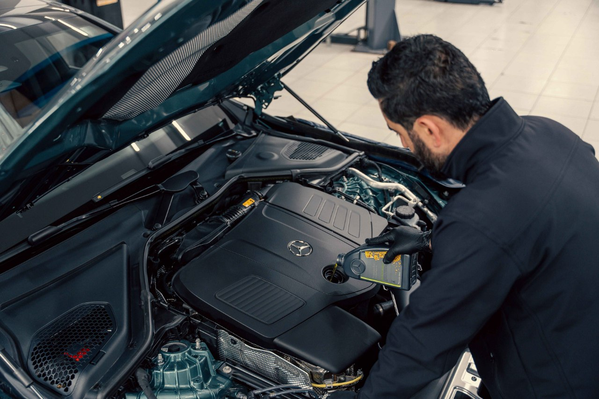

Home / Oil and fluids
How to Change Engine Oil at Home: Tools, Steps and Mistakes
Quick answer
Warm the engine slightly, raise the car safely on jack stands, drain the old oil, replace the filter and drain plug washer, refit the plug to the manual's torque, then refill with the correct grade and quantity. Run the engine, check for leaks and re-check the level on the dipstick. Take used oil to a recycling point.

What you need to change your own oil
| Item | Notes |
|---|---|
| Engine oil | Correct grade and approval for your engine. See your manual. |
| New oil filter | Quality part matched to your engine. See Oil Filter: How Often to Change It. |
| Drain plug washer | Many cars need a new one each time. |
| Drain pan | Large enough for the full oil capacity. |
| Socket set, torque wrench | Torque wrench for the drain plug. |
| Oil filter wrench | Cap-style or strap type for your filter. |
| Jack stands and wheel chocks | Never rely on the jack alone. |
| Funnel, gloves, rags | Plus something to protect the floor. |
Before you start
- Check your manual for the oil specification, capacity and the drain plug torque.
- Run the engine for a few minutes to warm the oil so it drains well, but let it cool enough to avoid burns.
- Park on level ground, parking brake on, and chock the wheels.
Safety note. Use proper jack stands on solid ground. Never work under a car supported only by a jack. Hot oil can burn, so wear gloves and let the engine cool slightly.
How to change engine oil, step by step
- Raise the front of the car at the jacking points and support it on jack stands.
- Find the drain plug and filter. Place the drain pan under the plug, slightly to the side because the oil comes out in an arc at first.
- Loosen the drain plug with the correct socket, then unscrew the last turns by hand. Let it drain fully, which can take 10 minutes or more.
- Fit a new washer if required, clean the plug and refit it. Tighten to the torque in your manual. Over-tightening can strip the sump thread.
- Move the pan under the oil filter and loosen the filter with the wrench. Expect some oil to spill.
- Wipe the filter seat. Lightly oil the new filter's rubber seal and screw it on. Follow the instructions on the filter, usually hand-tight plus a part turn. Don't use a wrench to over-tighten it.
- Lower the car to level ground.
- Remove the filler cap and pour in most of the specified oil. Wait a minute, then check the dipstick. See How to Read an Oil Dipstick.
- Top up until the level sits between MIN and MAX, then refit the cap.
- Start the engine for about 30 seconds. The oil light should go out quickly. Switch off, wait a few minutes, check for leaks under the car and re-check the level.
Common mistakes to avoid
- Double-gasketing the filter: the old rubber seal can stick to the engine. Check it came off with the filter.
- Overfilling: too much oil can cause foaming and leaks.
- Skipping the washer: a worn washer can weep oil.
- Overtightening the plug or filter: a torque wrench prevents this.
- Forgetting to refit the filler cap.
If you notice a smell afterwards, read Burning Smell After an Oil Change. If the new oil looks dark quickly, see Why Is My Oil Black Right After an Oil Change?.
Disposing of used oil safely
Never pour oil down a drain or onto the ground. Pour it from the pan into a sealed container and take it to a recycling center, a parts shop or a garage that accepts used oil. Old filters should go with it, as they still hold oil.
After the oil change
- Reset the service indicator if your car has one. The method is in the manual.
- Note the date and mileage so you know when the next change is due. See How Often Should You Change Your Engine Oil?
- Check under the car after a short drive for any drips.
FAQ
How long does an oil change take at home?
Roughly 45 minutes to an hour for a first-timer, mostly spent draining and working safely.
Do I always need to replace the oil filter?
Yes, it's best practice to change it with the oil, so the new oil isn't contaminated.
Should the engine be hot or cold when I drain the oil?
Slightly warm is ideal, as warm oil drains better. A very hot engine is a burn risk.
How do I know how much oil to add?
The capacity is in your manual. Add most of it, then use the dipstick to fine-tune.
Can I change the oil without a ramp?
Yes, with a jack and jack stands, if you follow the safety steps.
This guide is general information, not professional advice. Check your own vehicle's manual for exact specs and read the disclaimer before starting any job.